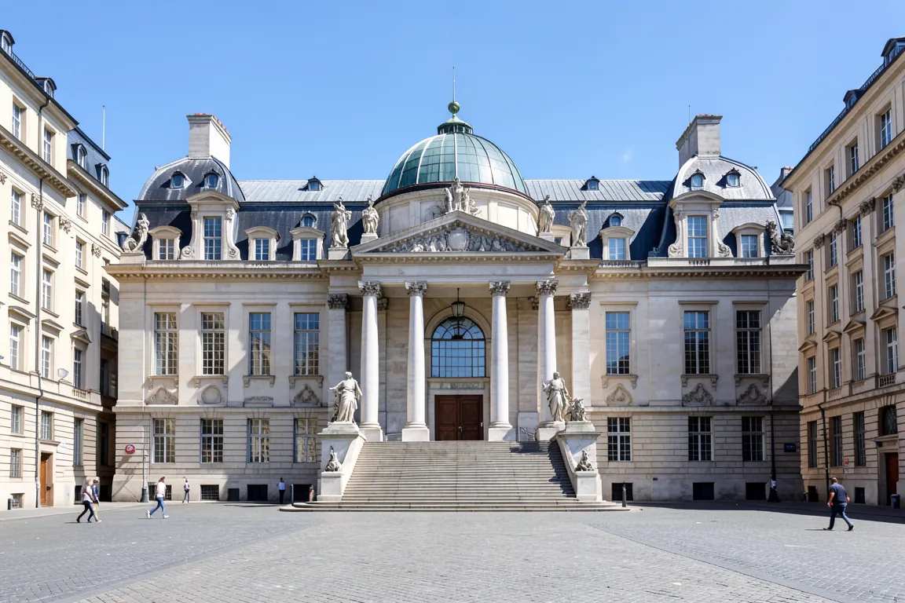

Великая классическая система, которой учили в Школе изящных искусств в Париже: ясный план на осях, богатый скульптурный фасад со сдвоенными колоннами и мансардная крыша. Превратила оперный театр, вокзал и ратушу в публичные дворцы.

Главная идея
Великое здание сначала планируется: парти — это ясная последовательность осей, комнат и маршрутов, а классический орнамент и скульптура увенчивают план.
Принципы дизайна
Начинайте с плана: главная ось, одна или две поперечные оси и комнаты в иерархии размера от входного холла до большого салона.
Компонуйте фасад как симметричный трёхчастный ордер: база, колоннада или гигантский ордер и аттик или мансардная крыша.
Отмечайте центральный павильон и концевые павильоны выносом на 0,5–2 м и более высокой крышей.
Берите сдвоенные колонны и богатый классический антаблемент на главном этаже, со скульптурными группами на аттике.
Делайте большую лестницу или зал высотой 15–25 м кульминацией плана, в мраморе и позолоте.
Связывайте здание с городом: фасад на площадь или проспект, с осью, продолженной улицей.
Антипаттерны
Планы без оси и ясной иерархии комнат
Голые неукрашенные стены и плоские крыши без скульптуры
Асимметричные живописные композиции
Открытые стальные каркасы и видимая индустриальная конструкция на фасаде
Готические и романские мотивы в главном ордере
Маленькие скромные комнаты в главной последовательности